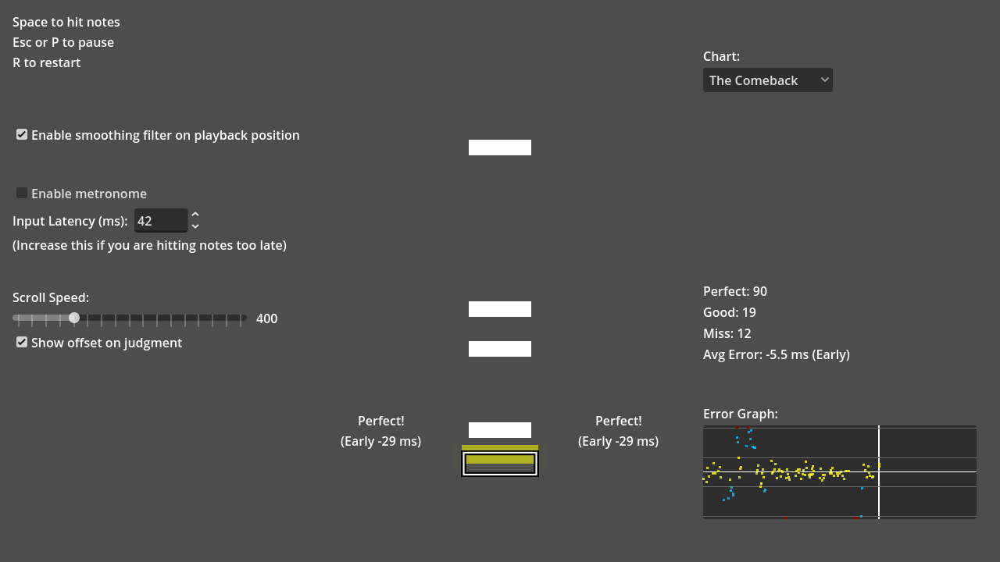

The one actual game in this batch: notes fall onto a guide in time with a song; press Space on the beat; the game shows how early or late you were, in milliseconds.
OBSERVED in code or a named doc INFERRED implied MISSING undecided
No gate is signed. GAME-BRIEF.md is an unsigned working brief. → GDD.md

UPSTREAM ART godot/screenshots/rhythm_game.webp. Walker's own captures exist in evidence/ but were deliberately not used for this pass.
OBSERVED GAME-BRIEF.md:3-5 Teach audio-clock-driven motion through a playable one-button rhythm demo. Preserve upstream chart, visuals and timing; make small evidenced improvements.
MISSING player, player fantasy, PX goals, pillars, priorities, and whether it ever grows beyond a demo (Q-01).
Press 200 ms early: Miss, note consumed. Press 200 ms late: nothing; the note already left. Q-06.
| ID | Risk |
|---|---|
| R-01 | Automated timing presented as heard sync |
| R-02 | Music distributed before provenance is settled (Q-08) |
| R-07 | Zero human playtests |
| ID | Question |
|---|---|
| Q-01 | Keep this a teaching demo, or grow it into a game (more charts, grades, persistence)? |
| Q-02 | Who is the player/learner? |
| Q-03 | Player experience goals? |
| Q-04 | Pillars and feature priorities? |
| Q-05 | Is a score/grade wanted beyond counts and average error? Should misses count in the mean? |
| Q-06 | Should a late press (150–300 ms) register as a Miss? |
| Q-07 | Is `beat + output_latency_seconds` in the metronome a bug? |
| Q-08 | Is the song cleared for distribution? |
| Q-09 | How is hardware latency calibrated, and is 20 ms the right default? |
| Q-10 | Is note continuity after a long pause acceptable while the filter re-converges? |
| Q-11 | Any progression or persistence (best scores, saved settings)? |
| Q-12 | Target platforms (desktop only, Web)? |
| Q-13 | Confirm world, narrative and characters are out of scope. |
| Q-14 | More charts or songs? |
H-01 is cheap and is the only test that answers the brief's own question. Decide the late-miss asymmetry on purpose. Confirm the metronome line before it appears on film as proof of sync. First fix: Q-08, the soundtrack.